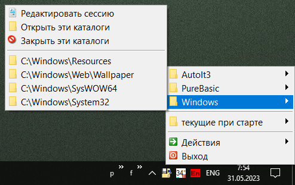

SaveFolders
Назначение
Избранное папок в трее (WinXP). Новые версии Windows позволяют создать панель с папками, необходимоcть в программе пропала. Единственный плюс пара хоткеев было - создать файл и создать папку, а также переименование по F1

Взаимосвязанные
SaveFolders (Linux)
SaveFolders - позволяет сохранить несколько сессий открытых каталогов, и восстанавливать их. Просто удобное меню для открытия каталогов. Восстановление сессии при переключении между WinPE и установленной операционной системой. Опция "учитывать позицию и размеры" полезна только при использовании в разных OS, так как для текущей сохраняется в реестре. Опция "Сократить длинные пути" позволяет компактно отображать только начало и конец для путей превышающих 40 символов.
Для расширения функциональности добавлены горячие клавиши:
F1 - переименование c расширением
F2 - переименование без расширения
F9 - создание папки
F10 - создание текстового файла
ALT+ESC - выход